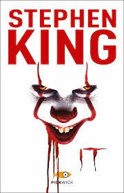

 Ottobre 1957. Una misteriosa entità multiforme si risveglia da un letargo di 27 anni trascorso nelle viscere della città di Derry, Maine, e assume la forma del clown Pennywise. Il primo incontro avviene con un bambino di sei anni, George Denbrough, che sta tentando di recuperare una barchetta di carta da un canale di scolo. Pennywise avvicina George al tombino per rendergli la barchetta, poi lo uccide brutalmente divorandogli il braccio sinistro. A giugno Ben Hanscom, un ragazzo obeso, viene attaccato dalla banda di bulli locali, capitanata da Henry Bowers (che incide sulla pancia di Ben una H). Ben si salva inoltrandosi nelle lande, dove fa conoscenza con l'ipocondriaco Eddie Kaspbrak e Bill Denbrough, il balbuziente fratello maggiore di Georgie. I tre ragazzi stringono amicizia con altri tre ragazzi, l'irruento Richie Tozier, l'ebreo Stan Uris e il maschiaccio Beverly Marsh, con i quali formano il gruppo dei "Perdenti". Presto si rendono conto che ciascuno di loro ha avuto un incontro personale con It: a Ben è apparso come un clown-mummia sulla superficie del fiume, a Eddie come un vagabondo lebbroso, a Bill come Georgie nell'album sanguinante di quest'ultimo, a Richie come la statua animata del boscaiolo Paul Bunyan, a Beverly come le voci dei bambini scomparsi in un lavandino sanguinante e a Stan come i fantasmi dei bambini morti alla cisterna cittadina. Bill e Richie, indagando, visitano la casa abbandonata di Neibolt Street e vengono attaccati da It in forma di licantropo, riuscendo a salvarsi e a rallentarlo immaginando di poterlo ferire con determinati strumenti. Un giorno, i Perdenti si dirigono ai Barren (una zona disabitata ai confini di Derry) per giocare, ma vengono raggiunti da Henry e dalla sua banda che stanno inseguendo Mike Hanlon, un ragazzino afroamericano. I Perdenti decidono di difendere quest'ultimo e ingaggiano una battaglia a colpi di sassi e petardi contro i bulli, riuscendo a metterli in fuga e accogliendo tra loro Mike, che si unisce al gruppo. Anche quest'ultimo rivela di essere riuscito a sfuggire a It in un'occasione in cui lo aveva attaccato sotto forma di mostruoso uccello gigante. It minaccia di morte i Perdenti se proveranno a fermarlo, ma Bill percepisce che ha paura di loro e giura di uccidere il mostro per vendicare Georgie. I Perdenti, sotto consiglio di Ben, si sottopongono a un'antica prova indiana, al termine della quale Richie e Mike scoprono che It esiste da milioni di anni ed è giunto sulla Terra in un non meglio identificato meteorite o su un'astronave (descritta simile a una versione oscura dell'arca dell'alleanza). Qualche tempo dopo, Eddie viene a sapere dal suo farmacista che la medicina per la sua asma non è altro che un placebo a base di acqua e canfora, pertanto non è davvero malato ma è stato psicologicamente indotto a crederlo dalla madre iperprotettiva. Approfittando di questo momento di debolezza psicologica (si suppone a causa della manipolazione degli eventi di It), viene attaccato e pestato a sangue dalla banda di Henry, che gli spezzano un braccio. Il giorno successivo, alla discarica, Beverly assiste casualmente alla morte di Patrick Hockstetter, un sociopatico membro della banda di Henry, il quale viene ucciso da It sotto forma di sanguisughe alate uscenti dal frigorifero abbandonato in cui rinchiudeva degli animali per farli morire. It cerca ancora di minacciare i Perdenti, ma questi ultimi non si lasciano intimidire. Il gruppo forgia dei proiettili d'argento da delle monete per usarli contro il mostro, basandosi sulle loro conoscenze dai film horror in cui l'argento è il punto debole delle creature mostruose. Poi si dirigono alla casa di Neibolt Street con l'intento di affrontare It. Qui il gruppo ingaggia uno scontro contro la creatura, che assume nuovamente la forma di licantropo, riuscendo a ferirlo grazie ai proiettili d'argento scagliati da Beverly con una fionda e alla forza congiunta delle loro menti, costringendo il mostro a darsi alla fuga. Ad agosto It manipola Henry, ormai impazzito, consegnandogli un coltello con cui uccidere il padre abusivo e spingendolo ad andare a cacciare i Perdenti per eliminarli. Beverly è costretta a scappare da casa quando suo padre violento cerca di aggredirla (e probabilmente di abusare sessualmente di lei) in parte a causa dell'influenza di It; dopo essere sfuggita all'uomo e alla banda di Henry, la ragazza si ricongiunge con gli amici e capisce che ormai la creatura ha posto sotto il suo controllo tutta la città e gli adulti per impedire loro di intervenire. I Perdenti si introducono nelle fogne (dove il mostro abita) per affrontarlo in definitiva, inseguiti da Henry e la sua banda. Questi ultimi sono assaliti da It sotto forma di Mostro di Frankenstein e solo Henry riesce a fuggire. Il gruppo raggiunge It, il quale assume la forma delle loro peggiori paure; Bill utilizza un'antica tecnica mistica di cui aveva letto in un libro, il Rito di Chüd, per entrare nella mente di It, riuscendo a sconfiggerlo con l'aiuto di un'entità benevola chiamata la Tartaruga (che aveva protetto i Perdenti fino a quel momento, impedendo loro di essere uccisi). I ragazzi, ritenendo di aver eliminato la creatura, si dirigono verso l'uscita dalle fogne; per riuscirci devono però approfondire il loro legame, quindi Beverly ha un rapporto sessuale con ciascuno dei suoi amici. Una volta fuori i Perdenti suggellano un patto col sangue, giurando di tornare a Derry ad affrontare It nel caso ritorni.